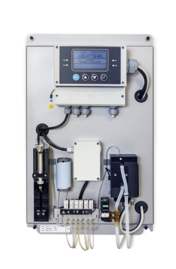

INSTRAN® is an online analyzer to measure different chemical and physical parameters in aqueous solutions, such as drinking water and waste water. It allows automatic control of the parameter configured, making it easier to monitor and manage water quality effectively.

Concentration determination after calculating the absorbance and using Beer–Lambert law:
Aluminium (Al³⁺), Boron (B), Copper (Cu), Chromium (VI) – Chromium Total (Cr VI – Cr Total), Cyanide (CN⁻), Iron (Fe²⁺) (Fe Total), Manganese (Mn), Nickel (Ni²⁺), Nitrite (NO₂⁻), Nitrate (NO₃⁻), Orthophosphate (PO₄³⁻), Sulphate (SO₄²⁻), Sulphide (S²⁻)
Ion selective electrodes used to determine the concentration according to Nernst equation:
Ammonium (NH₄⁺ - NH₃), Chloride (Cl⁻), Calcium (Ca²⁺), Fluoride (F⁻), Nitrate (NO₃⁻), Potassium (K⁺), Lead (Pb²⁺)
Colorimetric or ISE titration, depending on the type of measurement:
Alkalinity (High Range), Alkalinity (Low Range), Chlorine (High Range)
** More parameters could be measured or designed upon request